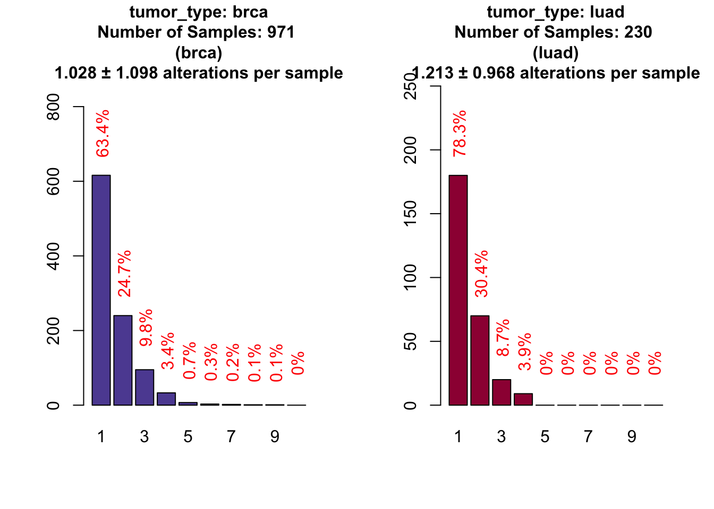

PrecisionTrialDesigner - A tool to analyze and design NGS based custom gene panels
Giorgio Melloni
Abstract
In recent years, two new forms of clinical trial designs emerged in clinical cancer genomics: umbrella and basket trials. Designs of such trials can be extremely difficult, starting from the creation of a valid screening panel, to the optimization of sequencing space and to the calculation of a correct sample size for the trial. PTD provides a serie of tools that can help bioinformaticians, clinicians and biostatisticians to design, analyze and finalize a custom gene panel for cancer genomics.
Introduction
In the era of personalized medicine and personalized health there is a tremendous effort to bring NGS based technology in the clinical routine. Nevertheless, the information coming from research studies is in most cases useless for the clinical practice and in addition too expensive. To bridge the gap between cancer research and clinical genomics, we propose PrecisionTrialDesigner, a suite of simple tools to explore the ability of less expensive cancer gene panels to be used in clinical trials. With this package, you can use information coming from different sources like mutations, expression, copynumber and fusion data and apply them to your cancer panel to see for example how many patients are covered by a specific mutations or better, how many patients would be covered by a drug that acts on multiple targets. Given a panel and tumor types to analyze, PrecisionTrialDesigner can be a terrific tool to create a pilot project for a basket or umbrella design and also to design the library to be ready for sequencing.
Data Preparation
The only input data the user has to provide is the panel itself. We create an easy to read standard format, suitable for every kind of alteration supported by PrecisionTrialDesigner. For example, while in the research practice genomic regions are a standard way to represent mutations (e.g. VCF style, 1:10000:A,C) this is not the most used form of representing druggable or pathogenic variants in clinical routine. The use of amino acid notation (BRAF V600E is sensitive to Vemurafenib) or dbsnp rs numbers (for example in OMIM database) is way more common but these are formats incompatible with NGS genomic format. With our tool, every kind of notation is accepted so that you can easily integrate any database at your disposal without any particular effort.
CancerPanel object
First of all, let’s see what is the format of a cancer panel:
library(PrecisionTrialDesigner)
library(knitr)
data(panelexample)
kable(panelexample)| drug | gene_symbol | alteration | exact_alteration | mutation_specification | group |
|---|---|---|---|---|---|
| Selumetinib | MAP2K1 | SNV | amino_acid_position | 68-361 | Actionable |
| Selumetinib | MAP2K1 | CNA | amplification | Actionable | |
| Selumetinib | MAP2K2 | SNV | Actionable | ||
| Selumetinib | MAP2K2 | CNA | amplification | Actionable | |
| Idelalisib | PIK3CA | SNV | Actionable | ||
| Idelalisib | PIK3CA | CNA | amplification | Actionable | |
| Trastuzumab | ERBB2 | CNA | amplification | Actionable | |
| Trastuzumab | ERBB2 | expression | up | Actionable | |
| Vemurafenib | BRAF | SNV | amino_acid_variant | V600E | Actionable |
| Vemurafenib | BRAF | SNV | amino_acid_variant | V600K | Actionable |
| Olaparib | BRCA1 | CNA | deletion | Actionable | |
| Olaparib | BRCA1 | SNV | Actionable | ||
| Olaparib | BRCA2 | CNA | deletion | Actionable | |
| Olaparib | BRCA2 | SNV | Actionable | ||
| Vandetanib | ERBB3 | SNV | Actionable | ||
| Vandetanib | ERBB2 | SNV | Actionable | ||
| Vandetanib | ABL2 | SNV | Actionable | ||
| Vandetanib | ABL1 | SNV | Actionable | ||
| Vandetanib | KDR | SNV | Actionable | ||
| Vandetanib | RIT1 | SNV | Actionable | ||
| Vandetanib | KIT | SNV | Actionable | ||
| Erlotinib | EGFR | SNV | mutation_type | missense | Actionable |
| Crizotinib | EML4__ALK | fusion | Actionable | ||
| Vandetanib | RET | fusion | Actionable | ||
| no_drug | KRAS | SNV | genomic_position | 12:25398275-25398375 | Driver |
| no_drug | KRAS | SNV | genomic_position | 12:25380256-25380356 | Driver |
| no_drug | KRAS | SNV | dbSNP_rs | rs121913535 | Driver |
| no_drug | HRAS | SNV | genomic_variant | 11:533874:T,A | Driver |
| no_drug | HRAS | SNV | genomic_variant | 11:534286:C,G | Driver |
| no_drug | NRAS | SNV | amino_acid_position | 5-165 | Driver |
| no_drug | NRAS | SNV | amino_acid_position | 150-189 | Driver |
| no_drug | TP53 | SNV | mutation_type | truncating | Driver |
| no_drug | TP53 | CNA | deletion | Driver |
A cancer panel is a data.frame of character columns and every row represents an alteration and its properties. We put together a panel using known specific drug targets (like Vemurafenib for BRAF V600E/K) or pathway targeting drugs (like kinases inhibitor Vandetanib). We also add known driver/prognostic genes with no associated drug (like KRAS or TP53). You have to bear in mind that the panel is both what you target and what you analyze. If you ask for a BRAF V600E alteration, you will sequence 3 bases but only V600E will have the characteristic of being druggable and will be considered in simulation analysis. In other words, by putting V600E you occupies 3 bases in your panel but in simulations only a change from valine to glutamic acid will be considered druggable.
- drug: drug names or compound or empty lines if this is not a druggable alteration;
- gene_symbol: HGNC official gene symbols where the alteration;
- alteration: can be one of the following ‘SNV’, ‘CNA’, ‘expression’, ‘fusion’:
- exact_alteration: a character vector that identifies the exact alteration depending on alteration value. For example, alteration ‘CNA’ could correspond to exact_alteration ‘amplification’ or ‘deletion’.
- mutation_specification: a character vector that must be empty if alteration is not ‘SNV’ and identifies the exact mutation in the format specified in exact_alteration
- group: this is a free field that is useful to identify groups of alteration. In the example is used to divide druggable from non-druggable driver variants. Another use could be to identify different panels and compare them.
We now present a list of possible alteration formats that must be respected. Possible values for a cancer panel in columns alteration, exact_alteration and mutation_specification are:
| alteration | exact.alteration | mutation_specification |
|---|---|---|
| CNA | amplification | NULL |
| CNA | deletion | NULL |
| expression | up | NULL |
| expression | down | NULL |
| fusion | NULL | NULL |
| SNV | NULL | NULL |
| SNV | mutation_type | missense |
| SNV | mutation_type | truncating |
| SNV | amino_acid_position | 300-300 |
| SNV | amino_acid_position | 300-350 |
| SNV | amino_acid_variant | V600E |
| SNV | genomic_position | 13:20000-40000 |
| SNV | genomic_position | 13:20000-20000 |
| SNV | genomic_variant | 13:20000:A,C |
| SNV | dbSNP_rs | rs1234567 |
Copynumber and expression are basically self explained. Mutations can be expressed in a plethora of ways but remember to keep the 1-base convention and in case of single position (amino acid or genomic) to replicate start and end (e.g. 300-300). If you don’t want to specify a particular mutation, you can either leave exact_alteration and mutation_specification empty or specify a subtype of alteration, like only missense or only truncating variants. In the example panel, BRCA1 is sensitive to a PARP inhibitor only if it is either deleted or truncated, because generally missense mutations are not considered pathogenic. Fusions have no particular format, but are expressed in the genesymbol column. If you put a single gene, PrecisionTrialDesigner will interpret it as ‘every fusion involving that gene’ (see RET), while if you put a specific fusion (see EML4__ALK), it will look only for that specific fusion. The format for specific fusions must be always gene1__gene2.
Now that we have our panel, we need to build an object of class CancerPanel:
mypanel <- newCancerPanel(panelexample)The class constructor performs two main tasks. The first one is to check for inconsistency in panel data.frame. The second is to calculate a genomic length for every row of the panel. CNA and expression alteration will have a length equal to the CDS or CDS plus UTR of the requested gene. Fusions follow the same rule, but when a specific fusion is requested, the length is equal to the mean of two genes involved. Finally, mutations will take a length equal to the exact alteration requested plus a padding_length that can be decided by the user. Note that this calculation does not take in to account overlapping regions as this is just a rough estimation for simulations in which every row counts for itself. For a precise calculation, refer to the last section PanelDesigner.
Gene length calculations are based on biomaRt and ensembl database which is located in the UK. For your convenience, we add the possibility of changing the host and go to a faster mirror located closer to your location.
# Connect to US east coast server
# The default is www.ensembl.org
mypanel <- newCancerPanel(panelexample , myhost="uswest.ensembl.org")A convenient list of mirror servers can be found here: ensembl mirrors. The same option is also available for panelDesign method.
getAlterations
Now that we have our panel, we want to test it against tumor samples. We will choose two different cancer types among the available ones:
## tumor_type
## 1 acbc
## 2 acc
## 3 acyc
## 4 all
## 5 ampca
## 6 blca
## name
## 1 Adenoid Cystic Carcinoma of the Breast
## 2 Adrenocortical Carcinoma
## 3 Adenoid Cystic Carcinoma
## 4 Hypodiploid Acute Lymphoid Leukemia|Infant MLL-Rearranged Acute Lymphoblastic Leukemia
## 5 Ampullary Carcinoma
## 6 Bladder Cancer|Bladder Cancer, Plasmacytoid Variant|Bladder Urothelial Carcinoma## List of 2
## $ data :'data.frame': 5668 obs. of 9 variables:
## ..$ entrez_gene_id : int [1:5668] 673 673 ...
## ..$ gene_symbol : chr [1:5668] "BRAF" ...
## ..$ case_id : chr [1:5668] "MB-5655" ...
## ..$ mutation_type : chr [1:5668] "Missense_Mutation" ...
## ..$ amino_acid_change : chr [1:5668] "Q94E" ...
## ..$ genetic_profile_id: chr [1:5668] "brca_metabric" ...
## ..$ tumor_type : chr [1:5668] "brca" ...
## ..$ amino_position : num [1:5668] 94 143 ...
## ..$ genomic_position : chr [1:5668] "7:140534633:G,C" ...
## $ Samples:List of 2
## ..$ brca: chr [1:3627] "MB-0002" ...
## ..$ luad: chr [1:610] "LU-A08-43" ...# Check available tumor types
head( showTumorType() )
# Fetch data from breast cancer and lung adenocarcinoma samples
mypanel <- getAlterations(mypanel , tumor_type=c("brca" , "luad"))
# See the updated slot dataFull for mutations
str( cpData(mypanel)$mutations , vec.len = 1)This method performs 3 tasks. Download available data from cBioportal and MD Anderson Fusion Portal for every alteration type of the requested genes, retrieve the total number of samples for which data are available within every alteration class and calculate a frequency matrix.
In case you are interested into downloading the population information for all the tumor types, it is possible to assign “all_tumors” to the parameter tumor_type getAlterations(mypanel , tumor_type="all_tumors")
Specify specific cancer studies
Additionally, instead of specifying the tumor type, it is also possible to display the individual study associated with each tumor type and select them one by one. This for example allows the user more control over what dataset will be used to run the simulation.
# Check available tumor types
showCancerStudy(c("brca","luad"))## cancer_study_id
## 19 brca_metabric
## 20 brca_bccrc
## 21 brca_broad
## 22 brca_sanger
## 23 brca_tcga_pub2015
## 24 brca_tcga_pub
## 25 brca_tcga
## 26 brca_bccrc_xenograft_2014
## 101 brca_igr_2015
## 78 luad_broad
## 79 luad_mskcc_2015
## 80 luad_tcga_pub
## 81 luad_tcga
## 82 luad_tsp
## name
## 19 Breast Cancer (METABRIC, Nature 2012 & Nat Commun 2016)
## 20 Breast Invasive Carcinoma (British Columbia, Nature 2012)
## 21 Breast Invasive Carcinoma (Broad, Nature 2012)
## 22 Breast Invasive Carcinoma (Sanger, Nature 2012)
## 23 Breast Invasive Carcinoma (TCGA, Cell 2015)
## 24 Breast Invasive Carcinoma (TCGA, Nature 2012)
## 25 Breast Invasive Carcinoma (TCGA, Provisional)
## 26 Breast cancer patient xenografts (British Columbia, Nature 2014)
## 101 Mutational profiles of metastatic breast cancer (France, 2016)
## 78 Lung Adenocarcinoma (Broad, Cell 2012)
## 79 Lung Adenocarcinoma (MSKCC 2015)
## 80 Lung Adenocarcinoma (TCGA, Nature 2014)
## 81 Lung Adenocarcinoma (TCGA, Provisional)
## 82 Lung Adenocarcinoma (TSP, Nature 2008)# Fetch data from breast cancer and lung adenocarcinoma samples
mypanel_alternative <- getAlterations(mypanel , tumor_type=c("luad_tcga", "brca_tcga_pub"))At this point, the data are downloaded by gene, without looking for the exact alteration requested. If you want, you can always put your own data, as long as you respect the format for each alteration type.
# Extract the data from the panel as a toy example.
repos <- lapply(cpData(mypanel) , '[' , c('data' , 'Samples'))
# How custom data should look like
str(repos , vec.len=1)## List of 4
## $ fusions :List of 2
## ..$ data :'data.frame': 6 obs. of 7 variables:
## .. ..$ tumor_type: chr [1:6] "brca" ...
## .. ..$ case_id : chr [1:6] "TCGA-C8-A1HJ" ...
## .. ..$ Gene_A : chr [1:6] "ERC1" ...
## .. ..$ Gene_B : chr [1:6] "RET" ...
## .. ..$ FusionPair: chr [1:6] "ERC1__RET" ...
## .. ..$ tier : chr [1:6] "tier1" ...
## .. ..$ frame : chr [1:6] "In-frame" ...
## ..$ Samples:List of 2
## .. ..$ brca: chr [1:1019] "TCGA-A1-A0SB" ...
## .. ..$ luad: chr [1:487] "TCGA-05-4244" ...
## $ mutations :List of 2
## ..$ data :'data.frame': 5668 obs. of 9 variables:
## .. ..$ entrez_gene_id : int [1:5668] 673 673 ...
## .. ..$ gene_symbol : chr [1:5668] "BRAF" ...
## .. ..$ case_id : chr [1:5668] "MB-5655" ...
## .. ..$ mutation_type : chr [1:5668] "Missense_Mutation" ...
## .. ..$ amino_acid_change : chr [1:5668] "Q94E" ...
## .. ..$ genetic_profile_id: chr [1:5668] "brca_metabric" ...
## .. ..$ tumor_type : chr [1:5668] "brca" ...
## .. ..$ amino_position : num [1:5668] 94 143 ...
## .. ..$ genomic_position : chr [1:5668] "7:140534633:G,C" ...
## ..$ Samples:List of 2
## .. ..$ brca: chr [1:3627] "MB-0002" ...
## .. ..$ luad: chr [1:610] "LU-A08-43" ...
## $ copynumber:List of 2
## ..$ data :'data.frame': 11172 obs. of 5 variables:
## .. ..$ gene_symbol: chr [1:11172] "MAP2K1" ...
## .. ..$ CNA : chr [1:11172] "normal" ...
## .. ..$ case_id : chr [1:11172] "TCGA-05-4244" ...
## .. ..$ tumor_type : chr [1:11172] "luad" ...
## .. ..$ CNAvalue : chr [1:11172] "-1" ...
## ..$ Samples:List of 2
## .. ..$ brca: chr [1:1080] "TCGA-LQ-A4E4" ...
## .. ..$ luad: chr [1:516] "TCGA-05-4249" ...
## $ expression:List of 2
## ..$ data :'data.frame': 1608 obs. of 5 variables:
## .. ..$ gene_symbol : chr [1:1608] "ERBB2" ...
## .. ..$ expression : chr [1:1608] "normal" ...
## .. ..$ case_id : chr [1:1608] "TCGA-05-4244" ...
## .. ..$ tumor_type : chr [1:1608] "luad" ...
## .. ..$ expressionValue: num [1:1608] 1.79 ...
## ..$ Samples:List of 2
## .. ..$ brca: chr [1:1093] "TCGA-LQ-A4E4" ...
## .. ..$ luad: chr [1:515] "TCGA-05-4249" ...# Use custom data in a new CancerPanel object
mypanel_toy <- newCancerPanel(panelexample)
mypanel_toy <- getAlterations(mypanel_toy , repos=repos)In this toy example, we extract the data from our CancerPanel object and transfer them to a new object. This operation can be useful in the moment you want to test subsets of your original panel using a freeze of your data. Remember that sample names are taken from the element ‘Sample’ of the list for each alteration type because our tool needs to know the actual reference samples for which a genomic screening were made, even if they have no alterations. If ‘Sample’ is not present, the sample names are retrieved directly from the data using column case_id, so remember to put them all. Adding more data than necessary is not a problem at this point, because every statistics and calculation are made after the call to subsetAlterations.
Add or filter custom data
Additionally, in case you want to add extra data from a different source, and you dispose of the data already according to the @dataFull slot format, you can append this dataset to an existing panel. This allows to increase the sample size for those rare tumor_types that are not present in the TCGA.
new_panel <- appendRepo(mypanel_toy , repos)Furthermore, if you want to filter certain mutations or fusions from your dataset, you can use the methods filterMutations and filterFusions. The first method, can be used with specific mutations or using a bed file.
# Create a bedfile
bed <- data.frame(chr = paste0("chr" , c(7 , 17))
, start = c(140534632 , 41244326)
, end = c(140534732 , 41244426)
, stringsAsFactors=FALSE)
kable(bed , row.names=FALSE)| chr | start | end |
|---|---|---|
| chr7 | 140534632 | 140534732 |
| chr17 | 41244326 | 41244426 |
# Apply the filter
# You can decide to exclude or keep only the mutations in the bed file
new_panel <- filterMutations(mypanel_toy , bed = bed , mode = "exclude")subsetAlterations
After getting alterations, we have to subset alterations for the exact specifications of our panel.
# Subset the alterations using panel information
mypanel <- subsetAlterations(mypanel)
# See the updated slot dataSubset
str( cpDataSubset(mypanel) , vec.len = 1)## List of 4
## $ fusions :'data.frame': 6 obs. of 6 variables:
## ..$ drug : chr [1:6] "Vandetanib" ...
## ..$ group : chr [1:6] "Actionable" ...
## ..$ gene_symbol : chr [1:6] "ERC1__RET" ...
## ..$ tumor_type : chr [1:6] "brca" ...
## ..$ case_id : chr [1:6] "TCGA-C8-A1HJ" ...
## ..$ alteration_id: chr [1:6] "fus_1" ...
## $ mutations :'data.frame': 3807 obs. of 6 variables:
## ..$ drug : chr [1:3807] "Selumetinib" ...
## ..$ group : chr [1:3807] "Actionable" ...
## ..$ gene_symbol : chr [1:3807] "MAP2K1" ...
## ..$ tumor_type : chr [1:3807] "luad" ...
## ..$ case_id : chr [1:3807] "LUAD-QY22Z" ...
## ..$ alteration_id: chr [1:3807] "mut_1" ...
## $ copynumber:'data.frame': 303 obs. of 6 variables:
## ..$ drug : chr [1:303] "Olaparib" ...
## ..$ group : chr [1:303] "Actionable" ...
## ..$ gene_symbol : chr [1:303] "BRCA1" ...
## ..$ tumor_type : chr [1:303] "brca" ...
## ..$ case_id : chr [1:303] "TCGA-AO-A0JL" ...
## ..$ alteration_id: chr [1:303] "cna_1" ...
## $ expression:'data.frame': 230 obs. of 6 variables:
## ..$ drug : chr [1:230] "Trastuzumab" ...
## ..$ group : chr [1:230] "Actionable" ...
## ..$ gene_symbol : chr [1:230] "ERBB2" ...
## ..$ tumor_type : chr [1:230] "luad" ...
## ..$ case_id : chr [1:230] "TCGA-05-4384" ...
## ..$ alteration_id: chr [1:230] "expr_1" ...As we can see, the format of the new slot is now the same for every alteration type and the information contained in the panel was merged. This format is necessary to perform our simulations since we can easily bind together all the kind of alterations.
Plots and Stats
PrecisionTrialDesigner has three different plot capabilities/statistics. Every plot can be turned off by using noPlot=TRUE option and statistics are reported instead. The first plot is the coveragePlot, which returns the absolute number of samples covered by at least one or more alterations. A more compact but less informative version of the same plot is the coverageStackPlot, which returns a breakdown of variable (e.g. drug) by its subcomponents (e.g. genes). The second one is called saturationPlot, and expresses the cumulative number of samples covered or the mean number of alteration per sample by adding one piece of the panel at a time. In particular, this plot is able to estimate the trade-off between the number of covered samples and the genomic space occupied by the panel (as a sort of proxy of cost). The third plot is called coocMutexPlot and is able to explore the relationship between pairs of features as mutual exclusive or cooccurent. For example, in a typical umbrella design, we seek for drugs or genes that are possibly mutual exclusive between each other, in order to maximize the number of covered patients and avoid confusing multiple targetting.
All plots accept a CancerPanel object and a grouping variable to see the plot stratified by gene or tumor type. Furthermore, you can decide the kind of alteration to plot, between mutations, copynumber, fusions,
expression or any combination of these.
coveragePlot and coverageStackPlot
Let’s draw the simplest of the coverage plot. We want to see how many samples are covered by at least one of the alteration of our panel, divided by tumor type:
coveragePlot(mypanel
, alterationType=c("mutations" , "expression" , "copynumber" , "fusions")
, grouping="tumor_type")
If we do not want the plot to be displayed but just the statistics, we can add the parameter noPlot set to TRUE.
# Same command, but we ask for no plot, just the statistics
covStats <- coveragePlot(mypanel
, alterationType=c("mutations" , "expression" , "copynumber" , "fusions")
, grouping="tumor_type"
, noPlot=TRUE)
# Proportion of covered samples by at least one alteration
atLeastOne <- covStats$plottedTable[ , 1]/covStats$SamplesThe results appears to be extremely good, because we reached 63% of breast samples and 78% for lung adenocarcinoma samples.
How many of these samples are actually actionable by at least one alteration? Since we use ‘group’ in our panel to divide druggable from non-druggable alterations, it is pretty easy to answer this question.
# We add a new grouping variable, 'group'
coveragePlot(mypanel
, alterationType=c("mutations" , "expression" , "copynumber" , "fusions")
, grouping=c("tumor_type" , "group")
)
Only the 58% of breast samples are actionable and 51% of lung adenocarcinomas.
Some of the drug are multitarget, like Vandetabib that acts on several kinases. So now we are interested in knowing what are the most altered genes for each drug. We could add one more grouping variable to the coveragePlot but we will end up with a very hard to read plot (one plot per gene). To overcome this difficulty, we implemented a more compact version of the coverage plot that only returns the number of samples with at least one alteration stratified for a ‘grouping’ variable.
# the stacked coverage plot requires:
# 'var' parameter (that selects the bars)
# 'grouping' parameter (that selects the stratification variable, optional)
# 'tumor_type' parameter (to select one or more tumor type, optional)
par(mfrow=c(2,1))
coverageStackPlot(mypanel
, alterationType=c("mutations" , "expression" , "copynumber" , "fusions")
, var="drug"
, grouping="gene_symbol"
, tumor_type="brca"
)
coverageStackPlot(mypanel
, alterationType=c("mutations" , "expression" , "copynumber" , "fusions")
, var="drug"
, grouping="gene_symbol"
, tumor_type="luad"
)
The stacked version of coverage plot reports a breakdown of each drug by gene and then the total samples covered by each drug. When the total is lower than the breakdown, it means that some of the samples are altered in more than one gene targeted by the same drug.
From this plot we can show for example that olaparib covers, in both tumors the 10% of the samples (9% for breast and 9% for lung). The contribute of its target BRCA1 and BRCA2 is different. While in breast cancer the number of altered samples is splitted between the two genes, in lung the contribution of BRCA2 is predominant ( BRCA1 covers the 3% while BRCA1 the 6% ).
Furthermore, a multitarget drug like Vandetanib could be a valuable therapeutic option, especially in lung adenocarcinoma. It covers the 17% of the samples with a large contribution of KDR ( 8%) and ABL2 (3%) that is not present in breast cancer.
If the plot result is not clear, we can create an interactive version of the same graph.
# Add parameter html=TRUE
myHTMLPlot <- coverageStackPlot(mypanel
, alterationType=c("mutations" , "expression" , "copynumber" , "fusions")
, var="drug"
, grouping="gene_symbol"
, html=TRUE)# The plot is not displayed immediately to allow the user to embed it in markdown document or web page
# Now run plot
plot(myHTMLPlot)saturationPlot
Our panel is performing very well on the absolute number of covered samples. What about its construction? With the next analysis, we will try to answer to questions related to each element of our panel and try to optimize it. In particular we want to ask:
- Is there a particular class of genes or drugs or alteration that is predominant over the others?
- What is the cumulative number of samples covered by growing the panel one piece at a time?
- Is our panel optimize in terms of length?
- Are there alterations/genes that are never seen in our samples?
- Do all the drugs have at least one altered target?
To answer these questions, let’s draw a saturation plot.
# Saturation plot by adding one gene at a time divided by tumor type
saturationPlot(mypanel
, alterationType=c("mutations" , "expression" , "copynumber" , "fusions")
, grouping="tumor_type"
, adding="gene_symbol"
)
The plot is quite simple to interpret. On the X axis we have genomic space, on the Y axis the mean number of alteration per sample. The plot is build by adding one gene at a time (adding parameter), using all alteration types (alterationType parameter) and drawing one curve per tumor type (grouping parameter). The genes are added by their frequency of alteration, starting from the most altered. As can be seen from the bottom right annotation, some of the genes are never altered in these tumor types. To find out who they are, we can run this simple lines of code:
# As always, we can ask for the statistics with the option noPlot
satStats <- saturationPlot(mypanel
, alterationType=c("mutations" , "expression" , "copynumber" , "fusions")
, grouping="tumor_type"
, adding="gene_symbol"
, noPlot=TRUE
)
# Retrieve all the genes of the panel
panelGenes <- unique( cpArguments(mypanel)$panel$gene_symbol )
# Look for the ones that are not present in the plot with a simple setdiff
missingGenes <- sapply( c("brca" , "luad") , function(x) {
setdiff( panelGenes
, satStats[ satStats$grouping==x , "gene_symbol2" ] )
})
# Print out
missingGenes## $brca
## [1] "BRAF" "RIT1" "EML4__ALK" "HRAS"
##
## $luad
## [1] "HRAS"As we can see, HRAS is never altered in the positions requested in the panel, both in breast and lung cancer samples. We can think about remove it from our panel and save some genomic space. This plot can also be seen from the drug point of view, by changing the variable adding:
# Saturation plot by adding one drug at a time divided by tumor type
saturationPlot(mypanel
, alterationType=c("mutations" , "expression" , "copynumber" , "fusions")
, grouping="tumor_type"
, adding="drug"
, y_measure="absolute"
)
In this case, we plot the absolute number of cumulative covered patient (like in the coverage plot) by using the parameter y_measure set to “absolute”. We can notice that by using just Idelasib (target of PIK3CA) and Trastuzumab (target of ERBB2), we can cover almost the 50% of breast cancer patients. Moreover, two drugs have no available target and could be excluded from a potential trial. On the other hand, lung samples are predominatly mutated in KRAS and TP53 and since these two genes are not targeted by any drug, the first “drug” category is indeed no_drug. In addition, we can appreciate a very high coverage for LUAD samples, but the saturation is reached at the point of Idelalisib/Olaparib and all other drugs increasing the coverage of 1-2%. Olaparib itself, occupies almost 25 Kbases alone with its targets by being a drug that acts on the very long genes BRCA1/2.
coocMutexPlot
The information coming from the saturationPlot is useful but not complete. In fact, the order of the genes/drugs can be misleading about the true coverage of a single feature. For example, let’s plot the coverage by drug and tumor type:
# One tumor at a time, we draw a stack plot of drug without stratification
par(mfrow=c(2,1))
coverageStackPlot(mypanel , var="drug"
, grouping=NA , tumor_type="brca" , collapseByGene=TRUE)
coverageStackPlot(mypanel , var="drug"
, grouping=NA , tumor_type="luad" , collapseByGene=TRUE)
In this case we add the parameter collapseByGene. This option is useful to prevent the package from counting two different types of alteration on the same gene and same sample to be counted twice. For example, if ERBB2 is both amplified and overexpressed (two things that are extremely correlated) in the same sample, it will count for 1 alteration only. This parameter has an effect on the bars from 2 to 10, but obviouvsly not on the ‘at least one’ alteration bar.
From this plot we can see for example that Olaparib (a target of BRCA1/2) accounts for almost the 11% of breast cancer samples, while in the saturationPlot its cumulative contribute appeared to be between 5-6%. This is where the coocMutexPlot comes handy.
# coocMutexPlot of drug divided by tumor type
coocMutexPlot(mypanel
, alterationType=c("mutations" , "expression" , "copynumber" , "fusions")
, grouping="tumor_type"
, var="drug")
This plot represents significant mutual exclusivity and cooccurence between couples of drugs. In particular, it tests whether all the alterations targeted by a drug tends to appear in different patients or together in the same set of patients. For example, we can appreciate that Olaparib is mutual exclusive with Idelalisib, so the drugs are active on different set of patients. This is particular useful to know for balancing a basket trial design. The more two drugs are mutual exclusive, the larger is the set of druggable patients.
The very same plot, using genes instead of drugs, shows a mutual exclusivity on both BRCA1 and BRCA2 against PIK3CA.
# coocMutexPlot of genes divided by tumor type
# To avoid plotting gene pairs with no significance, we set parameter plotrandom
coocMutexPlot(mypanel
, alterationType=c("mutations" , "expression" , "copynumber" , "fusions")
, grouping="tumor_type"
, var="gene_symbol"
, plotrandom=FALSE
)
Cooccurence and mutual exclusivity can also be seen from the prospective of similarity, rather than pair-wise mutex. For this purpose, we developed an alternative style for the plot that exploits binary distance between occurrences of alterations between genes or drugs.
# coocMutexPlot of drugs divided by tumor type
# Style set to dendro
coocMutexPlot(mypanel
, alterationType=c("mutations" , "expression" , "copynumber" , "fusions")
, grouping="tumor_type"
, var="drug"
, style="dendro"
)
Again, if you want just the statistics and no plot, set the parameter noPlot to TRUE.
# coocMutexPlot of genes divided by tumor type
coocMutexStats <- coocMutexPlot(mypanel
, alterationType=c("mutations" , "expression" , "copynumber" , "fusions")
, grouping="tumor_type"
, var="drug"
, noPlot=TRUE
)
kable(head(coocMutexStats) , digits = 3)| sp1_name | sp2_name | pVal.MutEx | pVal.Cooc | OR | grouping |
|---|---|---|---|---|---|
| Erlotinib | Idelalisib | 0.344 | 0.879 | 0.608 | brca |
| Erlotinib | no_drug | 0.921 | 0.292 | 2.501 | brca |
| Erlotinib | Olaparib | 0.847 | 0.525 | 2.055 | brca |
| Erlotinib | Selumetinib | 0.985 | 0.182 | 8.004 | brca |
| Erlotinib | Trastuzumab | 0.594 | 0.776 | 0.972 | brca |
| Erlotinib | Vandetanib | 0.988 | 0.090 | 5.644 | brca |
Idelalisib and Olaparib are mutual exclusive with a p-value of 0.0202.
Create your own plots
PrecisionTrialDesigner is designed to allow the user to perform a lot of tasks for designing a genomic based trial. Nevertheless, not all the possible plots are available inside the package. We implemented a function to extract the relevant information for any kind of simulation, called dataExtractor.
#Extract mutations from BRCA tumor type
myData <- dataExtractor(mypanel , alterationType = "mutations" , tumor_type = "brca")
# Check the format
str(myData)## List of 3
## $ data :'data.frame': 2273 obs. of 6 variables:
## ..$ drug : chr [1:2273] "Selumetinib" "Selumetinib" "Selumetinib" "Selumetinib" ...
## ..$ group : chr [1:2273] "Actionable" "Actionable" "Actionable" "Actionable" ...
## ..$ gene_symbol : chr [1:2273] "MAP2K1" "MAP2K1" "MAP2K1" "MAP2K1" ...
## ..$ tumor_type : chr [1:2273] "brca" "brca" "brca" "brca" ...
## ..$ case_id : chr [1:2273] "TCGA-D8-A1XK" "TCGA-EW-A3U0" "TCGA-PE-A5DE" "TCGA-E2-A159" ...
## ..$ alteration_id: chr [1:2273] "mut" "mut" "mut" "mut" ...
## $ Samples :List of 2
## ..$ brca : chr [1:3627] "MB-0002" "MB-0005" "MB-0006" "MB-0010" ...
## ..$ all_tumors: chr [1:3627] "MB-0002" "MB-0005" "MB-0006" "MB-0010" ...
## $ tumor_not_present: chr(0)A data extraction is therefore a list composed by data, Samples divided by tumor type and a character vector of tumors that are not present under the requested parameters. For example, we could ask how many samples are targeted by 0, 1, 2, 3 drugs. This function is not directly implemented in our package and so we can build it up here.
#Extract drug samples couples
dataDrug <- unique(myData$data[ , c("case_id" , "drug")])
# Retrieve all screened samples
samps <- myData$Samples$all_tumors
# Calculate number of drugs per patient (we consider also non altered samples)
drugsPerPatient <- table( factor(dataDrug$case_id , levels = samps) )
# Now in terms of frequency
drugsPerPatientFreq <- table(drugsPerPatient)/length(samps)
# Ready to plot
barplot(drugsPerPatientFreq , ylim = c(0,1)
, main="Patients with 0, 1, 2... molecular targets"
, col="darkcyan")
Panel Optimization
While copynumber, expression and fusions require reading the whole gene, mutations can be targeted with high sensitivity. For particularly large genes, according to the tumor type under examination, it is often better to target specific regions rather than sequencing the whole gene. To design such regions, a “ratiometric” approach could be the best solution, in the sense that it is better to evaluate the tradeoff between genomic space occupied by the panel and number of mutations captured.
A shiny-based interactive application was created to allow the users to design their custom regions. For a better explanation of all the features of panelOptimizer, we suggest you to follow the manual page ?panelOptimizer and reading carefully the instruction inside the app.
panOpt <- panelOptimizer(mypanel)Sample Size and Power Calculation
In a classical epidemiological study design, one of the most important task is power and sample size estimation. In PrecisionTrialDesigner is currently possible to evaluate two of the most common oncological trial designs: 2 sample time-to-event (survival) and 2-sample proportion equality. The methods survPowerSampleSize and propPowerSampleSize are currently implemented inside the package. In this vignette, we will evaluate the first of the two methods. The latter is very similar, but requires a different set of initial parameter (pCase and pControl).
Estimating full panel sample size and power
First, we calculate the sample size required to obtain 4 levels of power (from 0.6 to 0.9) for 4 different postulated hazard ratios (from 0.625 to 0.3). Type I error was set to 5% (‘alpha’) and baseline event rate per unit of time was set to 0.9 (‘ber’, which correspond to 10% 1-year progression-free survival). Average follow-up time is 3 years (‘fu’). Allocation is equal between treatment and control groups (‘case.fraction’).
survPowerSampleSize(mypanel
, HR = c(0.625 , 0.5 , 0.4 , 0.3)
, power = seq(0.6 , 0.9 , 0.1)
, alpha = 0.05
, ber = 0.9
, fu = 3
, case.fraction = 0.5
)
Our function estimates the real number of samples required to start the study under the hypothesis that only a fraction of them will have at least one alteration included in the panel. The number of samples that will actually enter in the study can be retrieved using the option noPlot, in the following way.
# Add option noPlot to retrieve results as dataframe
sampSize <- survPowerSampleSize(mypanel
, HR = c(0.625 , 0.5 , 0.4 , 0.3)
, power = seq(0.6 , 0.9 , 0.1)
, alpha = 0.05
, ber = 0.9
, fu = 3
, case.fraction = 0.5
, noPlot=TRUE
)
kable(sampSize[ sampSize$HazardRatio==0.5 , ] , row.names = FALSE)| Var | ScreeningSampleSize | EligibleSampleSize | Beta | Power | HazardRatio |
|---|---|---|---|---|---|
| Full Design | 74 | 49 | 0.4 | 0.6 | 0.5 |
| Full Design | 94 | 62 | 0.3 | 0.7 | 0.5 |
| Full Design | 120 | 79 | 0.2 | 0.8 | 0.5 |
| Full Design | 159 | 105 | 0.1 | 0.9 | 0.5 |
Under the column EligibleSampleSize we can see the actual number of patients in treatment and control groups combined under the postulated hypothesis (79).
Our sample size estimation function can also be used to estimate power from a postulated screening sample size. We first bring the sample size from screening to eligibility (multiplying by the frequency of alterations) and then perform the calculation. As a toy example, we use the same screening sample sizes calculated before and show the calculated power.
# Calculate power from sample size at screening
survPowerSampleSize(mypanel
, HR = 0.5
, sample.size = sampSize[ sampSize$HazardRatio==0.5 , "ScreeningSampleSize"]
, alpha = 0.05
, ber = 0.9
, fu = 3
, case.fraction = 0.5
)
So with 120 patients we obtain an estimated power of 0.8093875.
Estimating arm-wise sample size and power
In a typical basket or umbrella design, we can also be interested in what is the power or sample size of the design of each single drug or tumor type instead of the whole panel. By adding the parameter var, this task is easy to achieve.
# Calcualte sample size by tumor type
survPowerSampleSize(mypanel
, var = "tumor_type"
, HR = c(0.625 , 0.5 , 0.4 , 0.3)
, power = seq(0.6 , 0.9 , 0.1)
, alpha = 0.05
, ber = 0.9
, fu = 3
, case.fraction = 0.5
)
Similarly, we can also ask a design divided by drug. Given the frequency of alterations targetable by each drug, we can estimate how many patients should be screened to obtain the minimum number of samples to reach a certain level of power. In this case, we don’t ask for all the drug type, but only Olaparib and Idelalisib.
# Calcualte sample size by drug
# Visualize only "Olaparib" and "Idelalisib"
survPowerSampleSize(mypanel
, var = "drug"
, stratum = c("Olaparib" , "Idelalisib")
, HR = c(0.625 , 0.5 , 0.4 , 0.3)
, power = seq(0.6 , 0.9 , 0.1)
, alpha = 0.05
, ber = 0.9
, fu = 3
, case.fraction = 0.5
)
It is noteworthy that the calculations performed arm-wise are based on the assumption that each arm is completely independent from the others. In other terms, patients with two targetable alterations enter in the frequency calculations twice as they could be treated with both drugs. In a typical umbrella design (many drugs, one tumor type) the patient is generally not treated with multiple drugs and can enter in one arm only.
Priority Trial
The two sample size estimations above are useful in two particular occasions:
- The design of a genomic trial VS standard of care (full panel sample size)
- The design of single-drug VS standard of care (arm-wise sample size)
In case of a multi-drug design, the calculation of the number of patients to screen can be heavily biased. The first estimates the power of the whole study correctly, but each drug can be underpowered. The second estimates the power of each single arm correctly, but overestimates the total number of patients to screen. This is because the patients that are not eligible to enter in a specific arm cannot be assigned to a different drug and are simply discarded. To give an example, it is like performing 3 different clinical trials in 3 different hospitals with no possibility that a patient discarded from the first trial can be eligible in the other 2.
In a real umbrella trial scenario, the sample size should be calculated according to 3 assumptions:
- Each arm should reach a minimum level of power
- The total screening sample size should be minimized
- In case of multiple altertions and multiple drug opportunities, there could be a priority order for each drug
survPowerSampleSize has a specific parameter to fulfill these prerequisites called priority.trial, a character vector listings drugs or group levels to build an umbrella trial based on a priority order. Sample size calculation becomes a multistep process reproduced by a cascade algorithm of screening and assignement.
The algorithm is composed by steps that implement a serie of rules to screen and allocate patients to each arm of the trial. By default, the screening starts from the drug whose linked alteration are the rarest in the object up to the most common. This default rule gurantees the minimal sample size to screen. Alternatively, the user can decide the order of “importance” of each drug by changing the default priority.trial.order="optimal" to "as.is". In this case, the order of importance is dictated by the order of the priority.trial vector.
- Calculate a fixed Eligible Sample Size (ESS) that is common to all arms. This is the minimal threshold of patients that should enter in each arm.
- Start screening with the first drug, reaching the Screening Sample Size (SSS) necessary to reach ESS
- From the samples not eligible for the first drug, test the second drug/group and collects as many samples as possible up to ESS
- Continue using the not eligible samples up to the end of all drugs.
- If it is the last drug to screen, allocate all the possible samples, even over ESS. They are not eligible for any other drug.
- If it is not the last drug to screen, but all the other drugs already reached ESS, allocate as many samples as possible (like point 4.1).
- If all the drugs/groups have reached ESS, stop screening of new samples, otherwise start a new screening with the first drug/group that has not reached ESS yet.
- Repeat from point 3 up to the point that all drugs have reached ESS threshold.
In order to calculate the fraction of expected patients with an alteration that make them eligible for a drug, we need to calculate a matrix as shown below. Under a example design with 4 drugs (A, B, C, D), the fraction (probability) of obtaining an eligible patient is calculated as:
\[\mathbf{P_{A,B,C,D}} = \left[\begin{array} {rrrr} P(A) & P(B|\bar{A}) & P(C|\bar{A}\cup\bar{B}) & P(D|\bar{A}\cup\bar{B}\cup\bar{C}) \\ P(A|\bar{B}) & P(B) & P(C|\bar{A}\cup\bar{B}) & P(D|\bar{A}\cup\bar{B}\cup\bar{C}) \\ P(A|\bar{C}) & P(B|\bar{A}\cup\bar{C}) & P(C) & P(D|\bar{A}\cup\bar{B}\cup\bar{C}) \\ P(A|\bar{D}) & P(B|\bar{A}\cup\bar{D}) & P(C|\bar{A}\cup\bar{B}\cup\bar{C}) & P(D) \end{array}\right] \]
The dependence scheme derives from the following order of priority of the drugs taken into consideration (\(A \rightarrow B \rightarrow C \rightarrow D\)). The main diagonal represents the screening phase, that starts with new samples and so is not influenced by any other drugs. Moving to 2, the second drug, the probability is calcultaed as \(P(2|\bar{1})\) that in the table above is \(P(B|\bar{A})\). Moving to 3 means taking depencies from both 1 and 2, so \(P(2|\bar{1}\cup\bar{2})\) ( \(P(C|\bar{A}\cup\bar{B})\) ).
\[\mathbf{Order} = \left[\begin{array} {rrrr} 1 & 2 & 3 & 4 \\ 2 & 1 & 3 & 4 \\ 2 & 3 & 1 & 4 \\ 2 & 3 & 4 & 1 \end{array}\right] \]
The main diagonal (new screening line) uses the original frequencies of each drug, estimated as the number of eligible patients over the total number of samples in our CancerPanel object. Every advancement on the columns must take in consideration a depletion of all the samples that were already allocated. For example, \(P(B|\bar{A})\), ( first row , second column), calculates the number of eligible patients for B in a dataset epurated from all the samples eligible for A. If the drugs cover different pathways, the dependent frequencies are very similar to the original ones. Conversely, if you imagine two drugs with very similar molecular targets, once the first has removed all its eligible patients, very few patients can be allocated to the second treatment that will drop dramatically in frequency.
Now, let’s see an example. We take into consideration a design with four drugs, and we ask for the optimal order of priority of the drugs (basically starting from the rarest).
drugs4 <- c("Idelalisib" , "Olaparib" , "Trastuzumab" , "Vandetanib")
prior4drugs <- survPowerSampleSize(mypanel
, var = "drug"
, priority.trial = drugs4
, priority.trial.order="optimal"
, HR = 0.5
, power = 0.8
, noPlot = TRUE
)##
## Minimum Eligible Sample Size to reach 80% of power with an HR equal to 0.5 and a HR0 equal to 1 for each drug is equal to: 95prior4drugs## $`HR:0.5 | HR0:1 | Power:0.8`
## $`HR:0.5 | HR0:1 | Power:0.8`$Summary
## Vandetanib Olaparib Trastuzumab Idelalisib Total
## Screened 1130 139 0 0 1269
## Eligible 105 95 165 308 672
## Not.Eligible 532 66 0 0 597
##
## $`HR:0.5 | HR0:1 | Power:0.8`$Screening.scheme
## Vandetanib Olaparib Trastuzumab Idelalisib
## Vandetanib 1130 1035 953 806
## Olaparib 127 139 117 99
## Trastuzumab 0 0 0 0
## Idelalisib 0 0 0 0
##
## $`HR:0.5 | HR0:1 | Power:0.8`$Allocation.scheme
## Vandetanib Olaparib Trastuzumab Idelalisib
## Vandetanib 95 83 147 274
## Olaparib 10 13 18 34
## Trastuzumab 0 0 0 0
## Idelalisib 0 0 0 0
## Total 105 95 165 308
##
## $`HR:0.5 | HR0:1 | Power:0.8`$Probability.scheme
## Vandetanib Olaparib Trastuzumab Idelalisib
## Vandetanib 0.08409659 0.08000000 0.1541502 0.3399533
## Olaparib 0.07579909 0.08825978 0.1541502 0.3399533
## Trastuzumab 0.00000000 0.00000000 0.0000000 0.0000000
## Idelalisib 0.00000000 0.00000000 0.0000000 0.0000000
##
## $`HR:0.5 | HR0:1 | Power:0.8`$Base.probabilities
## Vandetanib Olaparib Trastuzumab Idelalisib
## 0.08409659 0.08825978 0.16402998 0.32805995The output is completely different from the regular one of this function. It is a list composed by 5 elements: Summary, Screening.scheme, Allocation.scheme, Probability.scheme, Base.probabilities.
- Summary: A matrix listings the number of samples screened, eligible (allocable) and not eligible (lost)
- Screening.scheme: An square matrix that reports the number of patients available for screening at each new screening (diagonal) and, by row, all the not eligible that are tested for the next drugs
- Allocation.scheme: Same as above, but now listings the number of patients eligible at each new step
- Probability.scheme: An square matrix reproducing the mathematical matrix above. Our algorithm is parsimonious, in the sense that some of those dependent probabilities are not calculated if the required sample size has been already reached.
- Base.probabilities: A named numerical vector listings the initial probability to find a patient eligible for each drug under no dependence assumptions. These values are used on the diagonal of Screening.scheme when a new screening is started.
A message is telling us that each drug must reach a number of eligible patients equal to 66, under a default case/control fraction of 0.5. We are designing a trial where each drug needs 33 treated and 33 controls. Reading from the Summary, our algorithm rules that patients must be screened to obtain
eligible subjects and discarding patients that cannot be inserted in any arm of the trial.
Let’s now compare the result to the ones seen in the two sections above.
# We use stratum to create a design with only four drugs
fullDesign <- survPowerSampleSize(mypanel
, var = "drug"
, stratum = drugs4
, HR = 0.5
, power = 0.8
, noPlot = TRUE)
kable(fullDesign)| Var | ScreeningSampleSize | EligibleSampleSize | Beta | Power | HazardRatio |
|---|---|---|---|---|---|
| Idelalisib | 290 | 95 | 0.2 | 0.8 | 0.5 |
| Olaparib | 1077 | 95 | 0.2 | 0.8 | 0.5 |
| Trastuzumab | 580 | 95 | 0.2 | 0.8 | 0.5 |
| Vandetanib | 1130 | 95 | 0.2 | 0.8 | 0.5 |
| Full Design | 180 | 95 | 0.2 | 0.8 | 0.5 |
As we can see, the Eligible Sample Size is the same as above, equal to 95. The Full Design calculates a number of patients to screen equal to 180, way lower than calculated by our priority trial. This result guarantees at least 80% of power on the whole trial, but it doesn’t assure sufficient power for all the arms of the study. Conversely, the sum of all the patients to screen assuming 4 indipendent trials is way higher, because a patient discarded from an arm of the study cannot be eligible for a different arm.
sum(fullDesign[fullDesign$Var %in% drugs4 , "ScreeningSampleSize"])## [1] 3077If we want to calculate the post-hoc power for the whole study, using a sample size equal to the one calculated with priority trial, we can do:
# Extract the number of samples calculated with priority.trial
sizePrior4Drugs <- prior4drugs[[1]]$Summary["Screened" , "Total"]
# Calculate post-hoc power, given sample.size
postHocPower <- survPowerSampleSize(mypanel
, var = "drug"
, stratum = drugs4
, HR = 0.5
, sample.size = sizePrior4Drugs
, noPlot = TRUE)
postHocPower[ postHocPower$Var=="Full Design" , "Power"]## [1] 1The power is basically 100%. In conclusion, priority.trial guarantees an high level of power for the whole trial and at least the same level of power for each drug, minimizing the samples to screen.
Basket Trial Design: tumor.freqs and tumor.weights parameters
The problem of using public data is that the information available from each tumor type depends on how many samples per tumor type were sequenced. In our example, we can see that mutation data are not the same between tumor types with 3627 sequenced samples for breast cancer and 610 for lung adenocarcinoma. Therefore, when calculating compound frequencies across tumor types, breast cancer weights more than lung cancer.
This behaviour was purposely set by default given the nature of the original idea of a panel-wise analysis that is the base of Umbrella Designs (one tumor type, multiple targets). In other words, PrecisionTrialDesigner is best suited for tumor-wise analysis where homogeneity of samples is automatically granted.
Nevertheless, Basket Designs (one target, multiple tumor types) can also be explored using this package by adding two parameters common to many of our functions.
- tumor.freqs: is a named vector, containing frequencies that are used to calculated a weighted mean by tumor types. e.g. if PIK3CA is mutated in the 30% of BRCA samples and 20% of LUAD samples, if you set tumor.freqs=c(brca=0.5 , luad=0.5) you are saying that you expect the same number of breast and lung samples in your study, therefore the weighted frequency now become 0.3x0.5 + 0.2x0.5 = 0.25;
- tumor.weights: is a named vector, containing the number of samples that will be randomly sampled from the original cohort contained in the CancerPanel object. e.g. by setting tumor.weights=c(brca=100 , luad=100), we randomly select 100 samples per tumor type and run the function.
| Function | tumor.freqs | tumor.weights |
|---|---|---|
| coveragePlot | present | present |
| coverageStackPlot | present | present |
| cpFreq | present | present |
| saturationPlot | present | |
| survPowerSampleSize | present | present |
| coocMutExPlot | present |
Let’s now see some examples that make use of these two parameters.
tumor.freqs: calculate weighted frequencies
As mentioned in the introduction, alteration frequencies are by default calculated on all available samples inside the object. If we want to establish the frequency of samples that can be targeted by each drug, we can run a simple coverageStackPlot like this:
coverageStackPlot(mypanel , var="drug"
, grouping=NA , collapseByGene=TRUE)
This plot derives from a calculation made with 971 breast samples and 230 lung samples, that are the ones with all available data from copynumber, mutations, fusions and expression. As you can see, this is not a balanced sample because breast tumors are the large majority. What if we had the same number of samples for each tumor type?
coverageStackPlot(mypanel , var="drug"
, grouping=NA , collapseByGene=TRUE , tumor.freqs=c(brca=0.5 , luad=0.5))
While some of the drugs do not change dramatically, some other drop down or increase significantly (check red numbers on top of the bars). For example, Idelalisib drops down in frequency by a 10% (before 0.32806, now 0.2344042). The reason is that is linked to PIK3CA, that is a gene that is rarely mutated in lung cancer, while it represents around the 30% breast cancer case. When the design is balanced, the frequency is dragged down towards the low LUAD frequency. Note that the plot is also slightly different from the previous one: now Y-axis reports the relative frequency (the same as the red text on the top of the bars), instead of the absolute number of samples that is usually reported. The reason is that tumor.freqs simply weights the tumor-wise frequencies by a 0.5 - 0.5 factor per tumor type and the original number of samples is therefore lost.
If we want to check our theory about PIK3CA, we can simply use tumor.freqs in cpFreq function.
# Run cpFreq with and withouth tumor.freqs
flatfreq <- cpFreq(mypanel , alterationType = "mutations")
weightedfreq <- cpFreq(mypanel , alterationType = "mutations" , tumor.freqs=c(brca=0.5 , luad=0.5) )# Frequency with no weights
kable(flatfreq[ flatfreq$gene_symbol=="PIK3CA" , ] , row.names=FALSE)| gene_symbol | freq |
|---|---|
| PIK3CA | 0.3323106 |
# Frequency with balanced weights
kable(weightedfreq[ weightedfreq$gene_symbol=="PIK3CA" , ] , row.names=FALSE)| gene_symbol | freq |
|---|---|
| PIK3CA | 0.2111452 |
tumor.weights: calculate frequency with fixed sample size
In this section, we analyze how a basket trial simulation can be carried on. Imagine a clinical trial on Idelalisib, a drug that acts on PIK3CA mutations. The study is designed so that each tumor type arm is closed when we reach 50 breast cancer cases and 40 lung cancer samples. Now we ask three questions:
- What is the average mutation frequency we expect from this exact sample composition?
- What is the distribution and variability of this frequency?
- What is the maximum and minimum frequency we can expect, or in other words, the worst and best case scenario in terms of treatment opportunity?
samplefreqs <- cpFreq(mypanel , alterationType = "mutations" , tumor.weights=c(brca=50 , luad=40))
kable(samplefreqs[ samplefreqs$gene_symbol=="PIK3CA" , ] , row.names=FALSE)| gene_symbol | freq |
|---|---|
| PIK3CA | 0.2777778 |
tumor.weights allows a random extraction of 50 and 40 samples from each tumor type and calculate the frequency. This is just 1 extraction, so the result could be completely biased. We need to run a bootstrap version to answer our questions.
# Run cpFreq 100 times (bootstrapping)
samplefreqsboot <- replicate( 100
, cpFreq(mypanel , alterationType = "mutations"
, tumor.weights=c(brca=50 , luad=40))
, simplify=FALSE)
# Extract PIK3CA frequency in the 100 runs
pik3caboot <- sapply(samplefreqsboot , function(x) x[x$gene_symbol=="PIK3CA" , "freq"])Now to answer the first two questions, let’s draw the distribution of our bootstrap sample:
# calculate mean and sd of PIK3CA frequency distribution
avgpik3ca <- mean(pik3caboot)
sdpik3ca <- sd(pik3caboot)
# Plot the distribution
title <- paste("PIK3CA frequency distribution with 50 BRCA and 40 LUAD samples"
, paste("Mean:" , round(avgpik3ca , 3))
, paste("SD:" , round(sdpik3ca , 3))
, sep="\n")
# draw a simple histogram. the red line shows the mean value
hist(pik3caboot , col="cadetblue" , breaks=30 , main=title , xlab="Frequencies of bootstrap samples")
abline(v = avgpik3ca , col="red" , lwd=3 , xpd=FALSE)
So, with our expected sample composition, we have an average of 0.228 samples mutated on PIK3CA with a standard deviation of 0.039. Also a confidence interval for our measure can be calculated, using percentile bootstrap confidence interval
\[(\theta_{\alpha/2}^{*};\theta_{1-\alpha/2}^{*})\]
To summarize what we should expect from this study, including answering to question 3:
# Write a simple function to calculate confidence interval of a proportion
CI <- function(x){
left <- quantile(x , 0.025)
right <- quantile(x , 0.975)
return(c(left , right))
}
# Create a small data.frame to summarize everything
pik3caSummary <- data.frame(Gene = "PIK3CA"
, AverageMutationRate = round(avgpik3ca , 3)
, SDMutationRate = round(sdpik3ca , 3)
, MaxMutationRate = round(max(pik3caboot)[1] , 3)
, MinMutationRate = round(min(pik3caboot)[1] , 3)
, CI = paste( round( CI(pik3caboot) , 3) , collapse=" - ")
)
kable(pik3caSummary , row.names=FALSE)| Gene | AverageMutationRate | SDMutationRate | MaxMutationRate | MinMutationRate | CI |
|---|---|---|---|---|---|
| PIK3CA | 0.228 | 0.039 | 0.311 | 0.144 | 0.156 - 0.3 |
What we known now is how PIK3CA would behave if we randomly select 90 individuals divided in 50 breast cancer and 40 lung cancer cases.
How is this affecting sample size estimation? As mentioned in the previous section, sample size at screening is influenced by the number of affected samples we expect to find. If you need to treat with Idelalisib a total of 100 samples, you would need at least 300 patients sequenced to obtain 100 PIK3CA mutated samples (considering a mutation rate of 30%). This means that while sample size at treatment is fixed and depends only from hazard ratio, power and other parameters chosen beforehand, sample size at screening depends on how lucky/unlucky we are in finding enough patients with the alteration we are targeting.
Luckily, also survPowerSampleSize has a tumor.weights parameter that can be bootstrapped as we did for cpFreq. Let’s see how. To simplify things, we hypothesize an hazard ratio of 2 and we want to reach a power of 80%.
# We want to know how many samples we will need under
# HR = 2
# power = 0.8
survboot <- replicate( 100
, survPowerSampleSize(mypanel
, var="gene_symbol"
, alterationType = "mutations"
, HR=2
, power=0.8
, tumor.weights=c(brca=50 , luad=40)
, noPlot=TRUE)
, simplify=FALSE)
# Extract PIK3CA results
survbootpik3ca <- sapply(survboot , function(x) x[ x$Var=="PIK3CA" , "ScreeningSampleSize"] )Again, we create a little table that would tell us the average scenario, the best, the worst etc. Calculation of confidence interval follows the same formula as above
# Create a small data.frame to summarize everything (we round up to integer values)
survSummary <- data.frame(Gene = "PIK3CA"
, Mean.Screen.Samp.Size = round(mean(survbootpik3ca))
, SD.Screen.Samp.Size = round(sd(survbootpik3ca))
, Max.Screen.Samp.Size = round(max(survbootpik3ca)[1])
, Min.Screen.Samp.Size = round(min(survbootpik3ca)[1])
, CI = paste( round( CI(survbootpik3ca)) , collapse=" - ")
)
kable(survSummary , row.names=FALSE)| Gene | Mean.Screen.Samp.Size | SD.Screen.Samp.Size | Max.Screen.Samp.Size | Min.Screen.Samp.Size | CI |
|---|---|---|---|---|---|
| PIK3CA | 342 | 77 | 666 | 202 | 234 - 517 |
What we learnt is that in the average scenario, we would need 342 samples to start our trial, with a minimum of 202 and, if we are very unlucky, a maximum of 666 patients at screening.
Panel Design
Once we are satisfied with our panel (and we suppose we are), the next step is to submit it to our preferred NGS company. The most accepted format to submit a panel is the bed format. As mentioned in the introduction, it is sometimes difficult to reconcile all the possible formats of alteration in a genomic position and that is what panelDesigner is designed for.
panelDesigner takes our CancerPanel object and 4 possible arguments.
- alterationType: decide to create the panel using only ‘mutations’,‘copynumber’ ,‘funsions’, ‘expression’ regions
or any combination of these. Default is to perform design on the whole panel; - padding_length: every region is elongated by this value in bp. Default 0. This operation is generally performed by the sequencing company itself in order to better characterize certain regions;
- merge_window: regions with a distance below this threshold in bp are merged to reduce the final number of amplicons at expense of sequencing more genomic space;
- utr: genes that demanded for the full length can be sequenced on their CDS or CDS + utr (full exons). Default FALSE
- canonicalTranscript: decide weather to take only the canonical transcript or collapse the genomic ranges of any transcript.
## List of 4
## $ GeneIntervals :'data.frame': 378 obs. of 9 variables:
## ..$ ensembl_transcript_id: chr [1:378] "ENST00000372348" ...
## ..$ ensembl_gene_id : chr [1:378] "ENSG00000097007" ...
## ..$ hgnc_symbol : chr [1:378] "ABL1" ...
## ..$ cds_length : int [1:378] 3450 3450 ...
## ..$ chromosome_name : chr [1:378] "9" ...
## ..$ genomic_coding_start : int [1:378] 133759356 133755455 ...
## ..$ genomic_coding_end : int [1:378] 133761070 133755544 ...
## ..$ exon_chrom_start : int [1:378] 133759356 133755455 ...
## ..$ exon_chrom_end : int [1:378] 133761070 133755544 ...
## $ TargetIntervals:'data.frame': 19 obs. of 5 variables:
## ..$ target_chr : chr [1:19] "15" ...
## ..$ target_start: int [1:19] 66727486 66729084 ...
## ..$ target_end : int [1:19] 66727575 66729230 ...
## ..$ target_width: int [1:19] 90 147 ...
## ..$ gene_symbol : chr [1:19] "MAP2K1" ...
## $ FullGenes : chr [1:14] "MAP2K1" ...
## $ BedStylePanel :'data.frame': 257 obs. of 4 variables:
## ..$ chr : chr [1:257] "chr1" ...
## ..$ start : int [1:257] 115251158 55248985 ...
## ..$ end : int [1:257] 115251275 55249171 ...
## ..$ annotation: chr [1:257] "NRAS" ...# Design our panel in full with no padding length and merge window equal to 100 bp
mydesign <- panelDesigner(mypanel
, padding_length=0
, merge_window=100)
str(mydesign , vec.len=1)The design is a list composed by four elements:
- GeneIntervals: all CDS and CDS + UTR for all the genes in the panel
- TargetIntervals: all requested target regions (specific single mutations) divided and collapsed by gene symbol
- FullGenes: gene symbols of the genes considered for their full sequence
- BedStylePanel: the entire panel in bed format, merged by chromosome, start and end.
So if you want to submit your panel right away, just write your bed file:
# Retrieve the panel in bed format
bedPanel <- mydesign$BedStylePanel
head(bedPanel)## chr start end annotation
## 1 chr1 115251158 115251275 NRAS
## 2 chr7 55248985 55249171 EGFR
## 3 chr15 66779565 66779630 MAP2K1
## 4 chr1 179100445 179100616 ABL2
## 5 chr15 66781552 66781614 MAP2K1
## 6 chr15 66782055 66782101 MAP2K1To know the total length of my panel, just sum up all the regions in the bed file:
# Calculate genomic space in kilo bases
sum( bedPanel$end - bedPanel$start )/100## [1] 509.87How panelDesigner decide the regions, according to the alteration specification?
- fusions: full sequence of all the genes involved in the fusions;
- copynumber: full sequence of all the genes requested for copynumber;
- expression: full sequence of all the genes requested for expression;
- mutations: if every mutations are requested, full sequence, otherwise, specific genomic targets
As mentioned before, fusion, copynumber and expression data are probably collected through different technologies (maybe no NGS at all). Considering a specific design for every alteration type is therefore desirable.
# Design the panel for mutations
myMutationDesign <- panelDesigner(mypanel
, alterationType="mutations"
, padding_length=0
, merge_window=100)By setting parameter alterationType, we require a design only for mutations.
Session Information
sessionInfo()## R version 3.4.0 (2017-04-21)
## Platform: x86_64-apple-darwin15.6.0 (64-bit)
## Running under: macOS Sierra 10.12.5
##
## Matrix products: default
## BLAS: /Library/Frameworks/R.framework/Versions/3.4/Resources/lib/libRblas.0.dylib
## LAPACK: /Library/Frameworks/R.framework/Versions/3.4/Resources/lib/libRlapack.dylib
##
## locale:
## [1] en_US.UTF-8/en_US.UTF-8/en_US.UTF-8/C/en_US.UTF-8/en_US.UTF-8
##
## attached base packages:
## [1] stats graphics grDevices utils datasets methods base
##
## other attached packages:
## [1] knitr_1.16 PrecisionTrialDesigner_0.99.0
##
## loaded via a namespace (and not attached):
## [1] ggrepel_0.6.5 Rcpp_0.12.11
## [3] lattice_0.20-35 LowMACAAnnotation_0.99.3
## [5] Rsamtools_1.28.0 Biostrings_2.44.1
## [7] rprojroot_1.2 digest_0.6.12
## [9] mime_0.5 R6_2.2.2
## [11] GenomeInfoDb_1.12.2 plyr_1.8.4
## [13] backports_1.1.0 stats4_3.4.0
## [15] RSQLite_2.0 evaluate_0.10.1
## [17] highr_0.6 httr_1.2.1
## [19] ggplot2_2.2.1 cgdsr_1.2.6
## [21] BiocInstaller_1.26.0 zlibbioc_1.22.0
## [23] rlang_0.1.1 lazyeval_0.2.0.9000
## [25] data.table_1.10.4 blob_1.1.0
## [27] googleVis_0.6.2 S4Vectors_0.14.3
## [29] R.oo_1.21.0 Matrix_1.2-10
## [31] DT_0.2 rmarkdown_1.6
## [33] labeling_0.3 BiocParallel_1.10.1
## [35] AnnotationHub_2.8.2 stringr_1.2.0
## [37] htmlwidgets_0.8 RCurl_1.95-4.8
## [39] bit_1.1-12 biomaRt_2.32.1
## [41] munsell_0.4.3 DelayedArray_0.2.7
## [43] shiny_1.0.3 compiler_3.4.0
## [45] httpuv_1.3.5 rtracklayer_1.36.3
## [47] BiocGenerics_0.22.0 htmltools_0.3.6
## [49] SummarizedExperiment_1.6.3 tibble_1.3.3
## [51] GenomeInfoDbData_0.99.0 interactiveDisplayBase_1.14.0
## [53] matrixStats_0.52.2 IRanges_2.10.2
## [55] codetools_0.2-15 XML_3.98-1.9
## [57] brglm_0.6.1 GenomicAlignments_1.12.1
## [59] shinyBS_0.61 bitops_1.0-6
## [61] R.methodsS3_1.7.1 grid_3.4.0
## [63] jsonlite_1.5 xtable_1.8-2
## [65] gtable_0.2.0 DBI_0.7
## [67] magrittr_1.5 scales_0.4.1
## [69] stringi_1.1.5 XVector_0.16.0
## [71] reshape2_1.4.2 RColorBrewer_1.1-2
## [73] tools_3.4.0 bit64_0.9-7
## [75] Biobase_2.36.2 profileModel_0.5-9
## [77] parallel_3.4.0 yaml_2.1.14
## [79] AnnotationDbi_1.38.1 colorspace_1.3-2
## [81] GenomicRanges_1.28.3 memoise_1.1.0Copyright © 2017 Giorgio Melloni. All rights reserved.